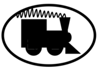

SignalTrain Samples
LA-2A: (model is Teletronix, bought new from Sweetwater ca. 2010)
- Input signal: input_1_.wav
- "Target" (aka real) LA-2A output (Switch=Compressor, Gain=20, Gain Reduction=95 -- i.e. "strong" compression): target_1_LA2A_3c__0__20__95.wav
- Predicted output from neural network: y_pred_1_LA2A_3c__0__20__95.wav
Few things:
- The neural network processes the audio in "chunks" or "windows." The "input window" is only 8192 samples long, so at 44.1 kHz this means we can't reproduce signals below 5 Hz.
- The "output window" is 2048 samples; the good news is that although this could produce a 'glitch' every 2048 samples, or a frequency of 21.5 Hz,
in fact no such peak occurs nor is any 'glitching' audible -- i.e., we are getting the phases right.
- What is audible is noise. On a power spectrum the added noise is visible above 13 kHz; low-pass-filtering this helps a bit but not much, as there is plenty of lower-frequency noise as well.
- Little back-of-the-envelope calculation: the Mean Absolute Error (between the target and the signal) is around 1E-05. Does that mean the noise is comparable to -50dB? This seems to agree with what we see in power spectrum plots.